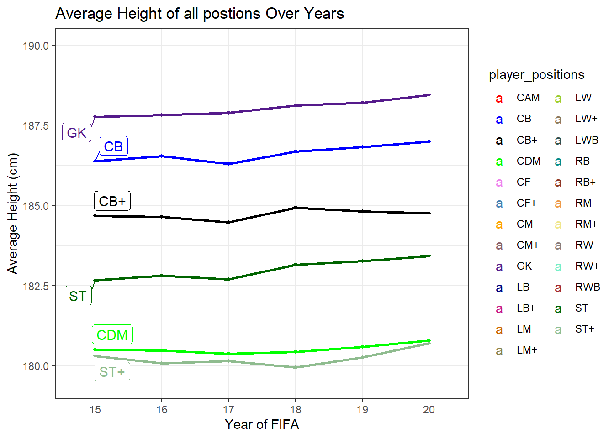
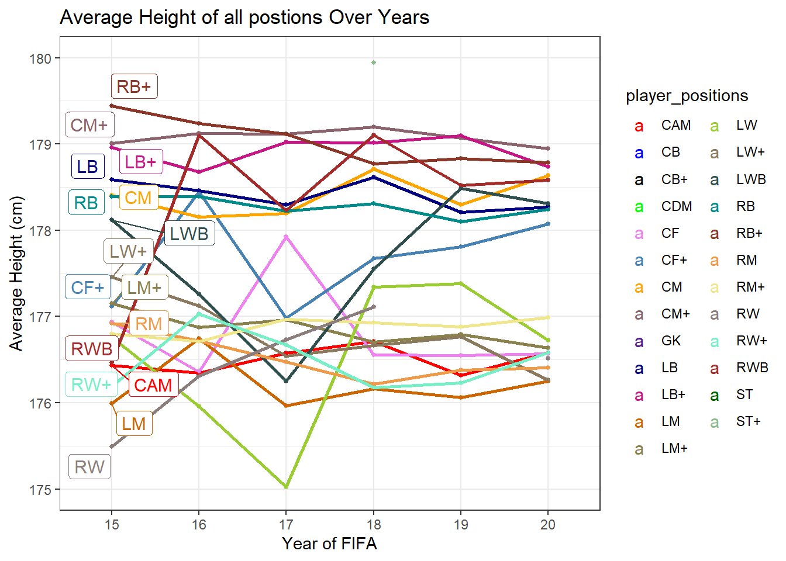

library(tidyverse)
library(ggplot2)
library(stringr)
library(ggrepel)
knitr::opts_chunk$set(echo = TRUE, warning=FALSE, message=FALSE)Final Project
final
FIFA
Analysis of EA Sports FIFA Data
Briefly describe the data
The datasets provided include the players data for the Career Mode from FIFA 15 to FIFA 20 (“players_20.csv”). The data allows multiple comparisons of the same players across the last 6 versions of the video game. The datasets all have the same amount of columns (104). Most of the columns are related to each players stats and each players rating based on position. There are columns of type character, double and date. My main goal is to find relationships and patterns of different variables over the years of FIFA. I found this dataset on Kaggle and the data was scraped from sofifa.com.
Read in data
file_path <- "_data/_players/"
csv_file_names <- list.files(path="_data/_players/", pattern="players*")
csv_file_names[1] "players_15.csv" "players_16.csv" "players_17.csv" "players_18.csv"
[5] "players_19.csv" "players_20.csv"To read in the data, I used use list.files(), which produces a character vector of the names of files or directories in the named directory. I then used the purr() function to iterate through each file and within each iteration use assign() and read_csv() to load each individual .csv file into the Global Environment. I used str_remove to parse out the .csv for each variable name.
csv_file_names %>%
purrr::map(function(file_name){
assign(x = str_remove(file_name, ".csv"),
value = read_csv(paste0(file_path, file_name)),
envir = .GlobalEnv)
})[[1]]
# A tibble: 15,465 × 104
sofifa_id player_url short…¹ long_…² age dob heigh…³ weigh…⁴ natio…⁵
<dbl> <chr> <chr> <chr> <dbl> <date> <dbl> <dbl> <chr>
1 158023 https://s… L. Mes… Lionel… 27 1987-06-24 169 67 Argent…
2 20801 https://s… Cristi… Cristi… 29 1985-02-05 185 80 Portug…
3 9014 https://s… A. Rob… Arjen … 30 1984-01-23 180 80 Nether…
4 41236 https://s… Z. Ibr… Zlatan… 32 1981-10-03 195 95 Sweden
5 167495 https://s… M. Neu… Manuel… 28 1986-03-27 193 92 Germany
6 176580 https://s… L. Suá… Luis A… 27 1987-01-24 181 81 Uruguay
7 183277 https://s… E. Haz… Eden H… 23 1991-01-07 173 74 Belgium
8 7826 https://s… R. van… Robin … 30 1983-08-06 187 71 Nether…
9 121944 https://s… B. Sch… Bastia… 29 1984-08-01 183 79 Germany
10 156616 https://s… F. Rib… Franck… 31 1983-04-07 170 72 France
# … with 15,455 more rows, 95 more variables: club <chr>, overall <dbl>,
# potential <dbl>, value_eur <dbl>, wage_eur <dbl>, player_positions <chr>,
# preferred_foot <chr>, international_reputation <dbl>, weak_foot <dbl>,
# skill_moves <dbl>, work_rate <chr>, body_type <chr>, real_face <chr>,
# release_clause_eur <lgl>, player_tags <chr>, team_position <chr>,
# team_jersey_number <dbl>, loaned_from <chr>, joined <date>,
# contract_valid_until <dbl>, nation_position <chr>, …
# ℹ Use `print(n = ...)` to see more rows, and `colnames()` to see all variable names
[[2]]
# A tibble: 14,881 × 104
sofifa_id player_url short…¹ long_…² age dob heigh…³ weigh…⁴ natio…⁵
<dbl> <chr> <chr> <chr> <dbl> <date> <dbl> <dbl> <chr>
1 158023 https://s… L. Mes… Lionel… 28 1987-06-24 170 72 Argent…
2 20801 https://s… Cristi… Cristi… 30 1985-02-05 185 80 Portug…
3 9014 https://s… A. Rob… Arjen … 31 1984-01-23 180 80 Nether…
4 167495 https://s… M. Neu… Manuel… 29 1986-03-27 193 92 Germany
5 176580 https://s… L. Suá… Luis A… 28 1987-01-24 182 85 Uruguay
6 183277 https://s… E. Haz… Eden H… 24 1991-01-07 173 74 Belgium
7 41236 https://s… Z. Ibr… Zlatan… 33 1981-10-03 195 95 Sweden
8 190871 https://s… Neymar Neymar… 23 1992-02-05 174 68 Brazil
9 164240 https://s… Thiago… Thiago… 30 1984-09-22 183 79 Brazil
10 168542 https://s… David … David … 29 1986-01-08 170 67 Spain
# … with 14,871 more rows, 95 more variables: club <chr>, overall <dbl>,
# potential <dbl>, value_eur <dbl>, wage_eur <dbl>, player_positions <chr>,
# preferred_foot <chr>, international_reputation <dbl>, weak_foot <dbl>,
# skill_moves <dbl>, work_rate <chr>, body_type <chr>, real_face <chr>,
# release_clause_eur <lgl>, player_tags <chr>, team_position <chr>,
# team_jersey_number <dbl>, loaned_from <chr>, joined <date>,
# contract_valid_until <dbl>, nation_position <chr>, …
# ℹ Use `print(n = ...)` to see more rows, and `colnames()` to see all variable names
[[3]]
# A tibble: 17,009 × 104
sofifa_id player_url short…¹ long_…² age dob heigh…³ weigh…⁴ natio…⁵
<dbl> <chr> <chr> <chr> <dbl> <date> <dbl> <dbl> <chr>
1 20801 https://s… Cristi… Cristi… 31 1985-02-05 185 80 Portug…
2 158023 https://s… L. Mes… Lionel… 29 1987-06-24 170 72 Argent…
3 190871 https://s… Neymar Neymar… 24 1992-02-05 174 68 Brazil
4 167495 https://s… M. Neu… Manuel… 30 1986-03-27 193 92 Germany
5 176580 https://s… L. Suá… Luis A… 29 1987-01-24 182 85 Uruguay
6 193080 https://s… De Gea David … 25 1990-11-07 193 82 Spain
7 41236 https://s… Z. Ibr… Zlatan… 34 1981-10-03 195 95 Sweden
8 173731 https://s… G. Bale Gareth… 26 1989-07-16 183 74 Wales
9 183907 https://s… J. Boa… Jérôme… 27 1988-09-03 192 90 Germany
10 188545 https://s… R. Lew… Robert… 27 1988-08-21 185 79 Poland
# … with 16,999 more rows, 95 more variables: club <chr>, overall <dbl>,
# potential <dbl>, value_eur <dbl>, wage_eur <dbl>, player_positions <chr>,
# preferred_foot <chr>, international_reputation <dbl>, weak_foot <dbl>,
# skill_moves <dbl>, work_rate <chr>, body_type <chr>, real_face <chr>,
# release_clause_eur <lgl>, player_tags <chr>, team_position <chr>,
# team_jersey_number <dbl>, loaned_from <chr>, joined <date>,
# contract_valid_until <dbl>, nation_position <chr>, …
# ℹ Use `print(n = ...)` to see more rows, and `colnames()` to see all variable names
[[4]]
# A tibble: 17,592 × 104
sofifa_id player_url short…¹ long_…² age dob heigh…³ weigh…⁴ natio…⁵
<dbl> <chr> <chr> <chr> <dbl> <date> <dbl> <dbl> <chr>
1 20801 https://s… Cristi… Cristi… 32 1985-02-05 185 80 Portug…
2 158023 https://s… L. Mes… Lionel… 30 1987-06-24 170 72 Argent…
3 190871 https://s… Neymar Neymar… 25 1992-02-05 175 68 Brazil
4 167495 https://s… M. Neu… Manuel… 31 1986-03-27 193 92 Germany
5 176580 https://s… L. Suá… Luis A… 30 1987-01-24 182 86 Uruguay
6 188545 https://s… R. Lew… Robert… 28 1988-08-21 185 79 Poland
7 193080 https://s… De Gea David … 26 1990-11-07 193 76 Spain
8 183277 https://s… E. Haz… Eden H… 26 1991-01-07 173 76 Belgium
9 155862 https://s… Sergio… Sergio… 31 1986-03-30 183 75 Spain
10 167664 https://s… G. Hig… Gonzal… 29 1987-12-10 184 87 Argent…
# … with 17,582 more rows, 95 more variables: club <chr>, overall <dbl>,
# potential <dbl>, value_eur <dbl>, wage_eur <dbl>, player_positions <chr>,
# preferred_foot <chr>, international_reputation <dbl>, weak_foot <dbl>,
# skill_moves <dbl>, work_rate <chr>, body_type <chr>, real_face <chr>,
# release_clause_eur <dbl>, player_tags <chr>, team_position <chr>,
# team_jersey_number <dbl>, loaned_from <chr>, joined <date>,
# contract_valid_until <dbl>, nation_position <chr>, …
# ℹ Use `print(n = ...)` to see more rows, and `colnames()` to see all variable names
[[5]]
# A tibble: 17,770 × 104
sofifa_id player_url short…¹ long_…² age dob heigh…³ weigh…⁴ natio…⁵
<dbl> <chr> <chr> <chr> <dbl> <date> <dbl> <dbl> <chr>
1 20801 https://s… Cristi… Cristi… 33 1985-02-05 187 83 Portug…
2 158023 https://s… L. Mes… Lionel… 31 1987-06-24 170 72 Argent…
3 190871 https://s… Neymar… Neymar… 26 1992-02-05 175 68 Brazil
4 193080 https://s… De Gea David … 27 1990-11-07 193 76 Spain
5 192985 https://s… K. De … Kevin … 27 1991-06-28 181 70 Belgium
6 155862 https://s… Sergio… Sergio… 32 1986-03-30 184 82 Spain
7 176580 https://s… L. Suá… Luis A… 31 1987-01-24 182 86 Uruguay
8 177003 https://s… L. Mod… Luka M… 32 1985-09-09 172 66 Croatia
9 183277 https://s… E. Haz… Eden H… 27 1991-01-07 173 74 Belgium
10 200389 https://s… J. Obl… Jan Ob… 25 1993-01-07 188 87 Sloven…
# … with 17,760 more rows, 95 more variables: club <chr>, overall <dbl>,
# potential <dbl>, value_eur <dbl>, wage_eur <dbl>, player_positions <chr>,
# preferred_foot <chr>, international_reputation <dbl>, weak_foot <dbl>,
# skill_moves <dbl>, work_rate <chr>, body_type <chr>, real_face <chr>,
# release_clause_eur <dbl>, player_tags <chr>, team_position <chr>,
# team_jersey_number <dbl>, loaned_from <chr>, joined <date>,
# contract_valid_until <dbl>, nation_position <chr>, …
# ℹ Use `print(n = ...)` to see more rows, and `colnames()` to see all variable names
[[6]]
# A tibble: 18,278 × 104
sofifa_id player_url short…¹ long_…² age dob heigh…³ weigh…⁴ natio…⁵
<dbl> <chr> <chr> <chr> <dbl> <date> <dbl> <dbl> <chr>
1 158023 https://s… L. Mes… Lionel… 32 1987-06-24 170 72 Argent…
2 20801 https://s… Cristi… Cristi… 34 1985-02-05 187 83 Portug…
3 190871 https://s… Neymar… Neymar… 27 1992-02-05 175 68 Brazil
4 200389 https://s… J. Obl… Jan Ob… 26 1993-01-07 188 87 Sloven…
5 183277 https://s… E. Haz… Eden H… 28 1991-01-07 175 74 Belgium
6 192985 https://s… K. De … Kevin … 28 1991-06-28 181 70 Belgium
7 192448 https://s… M. ter… Marc-A… 27 1992-04-30 187 85 Germany
8 203376 https://s… V. van… Virgil… 27 1991-07-08 193 92 Nether…
9 177003 https://s… L. Mod… Luka M… 33 1985-09-09 172 66 Croatia
10 209331 https://s… M. Sal… Mohame… 27 1992-06-15 175 71 Egypt
# … with 18,268 more rows, 95 more variables: club <chr>, overall <dbl>,
# potential <dbl>, value_eur <dbl>, wage_eur <dbl>, player_positions <chr>,
# preferred_foot <chr>, international_reputation <dbl>, weak_foot <dbl>,
# skill_moves <dbl>, work_rate <chr>, body_type <chr>, real_face <chr>,
# release_clause_eur <dbl>, player_tags <chr>, team_position <chr>,
# team_jersey_number <dbl>, loaned_from <chr>, joined <date>,
# contract_valid_until <dbl>, nation_position <chr>, …
# ℹ Use `print(n = ...)` to see more rows, and `colnames()` to see all variable namesAfter reading in each file, I can see that there is a ton of tidying to do. My first step is to remove all columns that I am not going to use. After that I will add a new columns called fifa_type to signify what version of the player it is since most players are in all games.
Tidy
players_15 <- players_15 %>%
mutate(fifa_type = "15") %>%
select(-c(player_url, long_name, body_type, real_face,release_clause_eur,
player_tags,team_position, team_jersey_number, loaned_from, nation_position,nation_jersey_number,
player_traits,mentality_composure,ls,st,rs,lw,lf,cf,rf,rw,lam,cam,ram,lm,lcm,cm,rcm,rm,lwb,ldm,cdm,rdm,
rwb,lb,lcb,cb,rcb,rb))
players_16 <-players_16 %>%
mutate(fifa_type = "16") %>%
select(-c(player_url, long_name, body_type, real_face,release_clause_eur,
player_tags,team_position, team_jersey_number, loaned_from, nation_position,nation_jersey_number,
player_traits,mentality_composure,ls,st,rs,lw,lf,cf,rf,rw,lam,cam,ram,lm,lcm,cm,rcm,rm,lwb,ldm,cdm,rdm,
rwb,lb,lcb,cb,rcb,rb))
players_17<- players_17 %>%
mutate(fifa_type = "17") %>%
select(-c(player_url, long_name, body_type, real_face,release_clause_eur,
player_tags,team_position, team_jersey_number, loaned_from, nation_position,nation_jersey_number,
player_traits,mentality_composure,ls,st,rs,lw,lf,cf,rf,rw,lam,cam,ram,lm,lcm,cm,rcm,rm,lwb,ldm,cdm,rdm,
rwb,lb,lcb,cb,rcb,rb))
players_18 <- players_18 %>%
mutate(fifa_type = "18") %>%
select(-c(player_url, long_name, body_type, real_face,release_clause_eur,
player_tags,team_position, team_jersey_number, loaned_from, nation_position,nation_jersey_number,
player_traits,mentality_composure,ls,st,rs,lw,lf,cf,rf,rw,lam,cam,ram,lm,lcm,cm,rcm,rm,lwb,ldm,cdm,rdm,
rwb,lb,lcb,cb,rcb,rb))
players_19<- players_19 %>%
mutate(fifa_type = "19") %>%
select(-c(player_url, long_name, body_type, real_face,release_clause_eur,
player_tags,team_position, team_jersey_number, loaned_from, nation_position,nation_jersey_number,
player_traits,mentality_composure,ls,st,rs,lw,lf,cf,rf,rw,lam,cam,ram,lm,lcm,cm,rcm,rm,lwb,ldm,cdm,rdm,
rwb,lb,lcb,cb,rcb,rb))
players_20<- players_20 %>%
mutate(fifa_type = "20") %>%
select(-c(player_url, long_name, body_type, real_face,release_clause_eur,
player_tags,team_position, team_jersey_number, loaned_from, nation_position,nation_jersey_number,
player_traits,mentality_composure,ls,st,rs,lw,lf,cf,rf,rw,lam,cam,ram,lm,lcm,cm,rcm,rm,lwb,ldm,cdm,rdm,
rwb,lb,lcb,cb,rcb,rb))The reason for removing these columns is that they do not add anything to the analysis I am trying to do. The only statistic that I removed from each players numerical stats was mentality_composure. The reason for this is that the players_15 data does not have that stat.
head(players_15)head(players_16)head(players_17)head(players_18)head(players_19)head(players_20)After removing all useless columns, I realized that most of the stats are type character instead of type double.This is because those columns have extra characters (+,-) in them. FIFA uses live stats to update players each week and this data was scrapped from a specific week. I only want to deal with the original base stats so I will remove those characters. Every dataset except players_20 is set up that way. After scrapping, I will change each stat column to type double.
vars_mut<- players_15%>%
select(-c(sofifa_id, short_name, age, dob, height_cm, weight_kg, nationality, club , overall,
potential, value_eur, wage_eur, player_positions, preferred_foot, international_reputation
,weak_foot,skill_moves, work_rate, joined ,contract_valid_until, pace, shooting, passing
,dribbling, defending, physic, gk_diving, gk_handling, gk_kicking ,gk_reflexes,
gk_speed,gk_positioning, fifa_type))
col_var_mut <- colnames(vars_mut)
head(players_15)Using players_15 (since each dataset has the same cols), I select all the columns I do not want to mutate since the majority of the columns need to be changed to type double. I create a variable called col_var_mut to store all my columns that need to be mutated.
sub.var <- function(x, na.rm=FALSE) (str_sub(x,start = 1, end = 2))
players_15_tidy<- players_15%>%
mutate_at(col_var_mut, sub.var) %>%
mutate_at(col_var_mut, as.double)
players_16_tidy <- players_16%>%
mutate_at(col_var_mut, sub.var) %>%
mutate_at(col_var_mut, as.double)
players_17_tidy <- players_17%>%
mutate_at(col_var_mut, sub.var) %>%
mutate_at(col_var_mut, as.double)
players_18_tidy <- players_18%>%
mutate_at(col_var_mut, sub.var) %>%
mutate_at(col_var_mut, as.double)
players_19_tidy <- players_19%>%
mutate_at(col_var_mut, sub.var) %>%
mutate_at(col_var_mut, as.double)In order to scrape the selected columns, I created a function called sub.var that selects a column and subsets each string for 2 digits. I am able to use str_sub since the columns are type character. I want a string of 2 digits because that will be the base value for all numerical stats. Once I scraped each columns for the selected datasets, I then change those columns to type double. The mutate_at() is essential because it only looks at the selected columns and saves me the time of writing out each column to mutate. I assign these new tidy datasets to new variables called players_x_tidy.
head(players_15_tidy)head(players_16_tidy)head(players_17_tidy)head(players_18_tidy)head(players_19_tidy)head(players_20)I display the head of each new dataset. Recall that players_20 already had clean player in game statistics and did not need to be mutated. At this point I am ready to join because now all columns are the same type for all datasets.
FIFA<- full_join(players_15_tidy,players_16_tidy) %>%
full_join(players_17_tidy) %>%
full_join(players_18_tidy) %>%
full_join(players_19_tidy) %>%
full_join(players_20)
head(FIFA, 10)Here I use a full join to create one big dataset called FIFA. I realized that there is still some tidying to do. Looking at the player_positions column, there are multiple positions for some players which could be a problem if we wanted to filter by position. The players main position is listed first, so a solution to this problem will be to scrap the rest of the positions out of the columns so that each data instance has one column.
Visuals
sub.var1 <- function(x, na.rm=FALSE) (str_sub(x,start = 1, end = 3))
vis1<- FIFA %>%
select(fifa_type,player_positions, height_cm) %>%
group_by(fifa_type, player_positions) %>%
mutate_at("player_positions",sub.var1)%>%
summarise(avg = mean(height_cm)) %>%
mutate(player_positions = str_replace(player_positions, "[:punct:]", "+"))
#vis1
data_ends <- vis1 %>%
filter(fifa_type == "15")
ggplot(vis1, aes(x=fifa_type, y=avg, group=player_positions, color = player_positions )) +
geom_point(size=1) +
geom_line(size=1) +
geom_label_repel(aes(label = player_positions),data = data_ends, size = 4) +
scale_colour_manual(values = c(CAM = "red", CB = "blue", "CB+" = "black", CDM = "green", CF= "violet",
"CF+" = "steelblue", CM = "orange", "CM+" = "pink4", GK = "purple4", LB = "navy",
"LB+" = "mediumvioletred", LM = "darkorange3", "LM+" ="lightgoldenrod4",LW ="yellowgreen",
"LW+" = "navajowhite4", LWB = "darkslategray", RB = "darkcyan", "RB+" = "tomato4",
RM = "tan2", "RM+" = "khaki",RW= "mistyrose4", "RW+" = "aquamarine2", RWB = "brown",
ST = "darkgreen", "ST+" = "darkseagreen")) +
ylim(179.5,190) +
theme(legend.position = "right") +
labs(title = "Average Height of all postions Over Years",
x = "Year of FIFA", y = "Average Height (cm)") +
theme_bw()
ggplot(vis1, aes(x=fifa_type, y=avg, group=player_positions ,color = player_positions)) +
geom_point(size=1) +
geom_line(size =1) +
geom_label_repel(aes(label = player_positions),data = data_ends, size = 4) +
scale_colour_manual(values = c(CAM = "red", CB = "blue", "CB+" = "black", CDM = "green", CF= "violet",
"CF+" = "steelblue", CM = "orange", "CM+" = "pink4", GK = "purple4", LB = "navy",
"LB+" = "mediumvioletred", LM = "darkorange3", "LM+" ="lightgoldenrod4",LW ="yellowgreen",
"LW+" = "navajowhite4", LWB = "darkslategray", RB = "darkcyan", "RB+" = "tomato4",
RM = "tan2", "RM+" = "khaki",RW= "mistyrose4", "RW+" = "aquamarine2", RWB = "brown",
ST = "darkgreen", "ST+" = "darkseagreen")) +
ylim(175,180) +
theme(legend.position = "right") +
labs(title = "Average Height of all postions Over Years",
x = "Year of FIFA", y = "Average Height (cm)") +
theme_bw()
First, I created another function similar to sub.var but instead scrapes the first three characters of the player positions. It has to be three because of positions like CAM and CDM. This created another problem because for some player_positions the third character is a comma and will stay present. From here I decided if a player has multiple positions, I would signify that by replacing the comma with a plus. I was able to do this by using str_replace with the regex value of [:punct:] and assigning +. Once I dealt with the player_position column, I began to think about my first visualization. Recall that my main goal to to see relationships of certain variables over the course of different FIFAs. For my first visualization, I want to analyze the average height of all positions over each FIFA. To do this, I created two ggplot line plots. I created two since there are 25 different positions to be analyzed so plotting them all on the same graph will cause overlaps. I split up the observations by using ylim(). The first graph depicts average height values between 179.5 to 190 and the second graph depicts values between 175 and 180. I also used ggrepel to display the names of the positions on the graphs. The data_ends variable makes the labels show up at FIFA 15.
Looking at he first graph, I can see that Goalkeepers on average are the tallest players based on positions. I also see that there are height differences between ST, ST+ and CB, CB+. The ST+ and CB+ positions have a lower average height because they play multiple positions, meaning their roles on their team are different than strictly ST or CB. Looking at the second graph, the first observation that pops out to me is the rate of change of LW over the years of FIFA. The average height of a LW dips down to 175cm in FIFA 17 and rises about 3cm in FIFA 18. LWB also has a similar decrease in height at FIFA 17. Maybe in FIFA 17 the average height of the left side positions are shorter compared to the other FIFAs. Seeing that RB+ and LB+ both have higher height averages than RB and LB implies that RB+ and LB+ players can play CB as well.
FIFA_tidy<- FIFA %>%
pivot_longer(col =-c(sofifa_id, short_name, age, dob, height_cm, weight_kg, nationality, club , overall,
potential, value_eur, wage_eur, player_positions, preferred_foot, international_reputation
,weak_foot,skill_moves, work_rate, joined ,contract_valid_until, fifa_type) , names_to = "stat",
values_to = "value", values_drop_na = TRUE )
head(FIFA_tidy)To examine a specific players pace, passing etc. ratings, I had to pivot all the ratings into a column so that I could filter through it. The two new columns are stat and value, with stat being the name of the specific rating and value being the value of that rating. Rating ranges from 0-99.
vis2 <- FIFA_tidy %>%
select(short_name,fifa_type, stat,value) %>%
filter(short_name %in% "L. Messi" ,stat %in% c("pace","shooting", "passing", "dribbling"))
vis3 <- FIFA_tidy %>%
select(short_name,fifa_type, stat,value) %>%
filter(short_name %in% "Cristiano Ronaldo" ,stat %in% c("pace","shooting", "passing", "dribbling"))
ggplot(vis2, aes(x=fifa_type, y=value, group=stat, color = stat )) +
geom_point(size=1) +
geom_line() +
theme(legend.position = "right") +
labs(title = "Messi Base Stats Over the Years",
x = "Year of FIFA", y = "Value") +
theme_bw()ggplot(vis3, aes(x=fifa_type, y=value, group=stat, color = stat )) +
geom_point(size=1) +
geom_line() +
theme(legend.position = "right") +
labs(title = " C. Ronaldo Base Stats Over Years",
x = "Year of FIFA", y = "Value") +
theme_bw()
For my next visuals I did a historical comparison between L. Messi and c. Ronaldo’s base stat ratings over the years of FIFA. Base stat ratings include pace, passing, dribbling and shooting. For Messi, I can see that the two ratings that are affected the most are pace and passing. Over the years of FIFA, Messi’s passing increase while his pace decreases. Maybe this is because he is getting older (lower pace) and is becoming more of a play maker than a goalscorer (higher passing). For Ronaldo, I also see a decrease in pace over the years but see that his passing slowly increases. I can conclude that both Messi and Ronaldo have been regressing from FIFA 15 to FIFA 20.
vis3<- FIFA %>%
select(short_name,fifa_type,overall,skill_dribbling, skill_ball_control) %>%
group_by(fifa_type) %>%
top_frac(0.004,overall) %>%
summarise(avg_drib = mean(skill_dribbling), avg_bc =mean(skill_ball_control))
vis4<- FIFA %>%
select(short_name,fifa_type,overall,movement_acceleration, movement_sprint_speed, movement_agility) %>%
group_by(fifa_type) %>%
top_frac(0.004,overall) %>%
summarise(avg_acc = mean(movement_acceleration), avg_ss =mean(movement_sprint_speed), avg_agil
=mean(movement_agility) )
vis5<- FIFA %>%
select(short_name,fifa_type,overall,attacking_short_passing, skill_long_passing, mentality_vision) %>%
group_by(fifa_type) %>%
top_frac(0.004,overall) %>%
summarise(avg_shortP = mean(attacking_short_passing), avg_longP =mean(skill_long_passing), avg_vision
=mean(mentality_vision))
vis3 %>%
pivot_longer(cols =c(avg_drib, avg_bc), names_to = "stat", values_to = "value") %>%
ggplot(mapping = aes(x = fifa_type, y = value, color=stat, group = stat)) +
geom_point()+
geom_line()+
facet_wrap(~ stat, nrow = 2) +
labs(title = " Advanced Dribbling Stats Over Years",
x = "Year of FIFA", y = "Value") +
theme_bw()vis4 %>%
pivot_longer(cols =c(avg_acc, avg_ss, avg_agil), names_to = "stat", values_to = "value") %>%
ggplot(mapping = aes(x = fifa_type, y = value, color=stat, group = stat)) +
geom_point()+
geom_line()+
facet_wrap(~ stat, nrow = 2) +
labs(title = " Advanced Pace Stats Over Years",
x = "Year of FIFA", y = "Value") +
theme_bw()
vis5 %>%
pivot_longer(cols =c(avg_shortP, avg_longP, avg_vision), names_to = "stat", values_to = "value") %>%
ggplot(mapping = aes(x = fifa_type, y = value, color=stat, group = stat)) +
geom_point()+
geom_line()+
facet_wrap(~ stat, nrow = 2) +
labs(title = " Advanced Passing Stats Over Years",
x = "Year of FIFA", y = "Value") +
theme_bw()
Next, I wanted to compare the average of the most important advanced player stats from the top players (player overall being greater then 83). Advanced stats are just more in depth base stats. For example, under the base stat dribbling there is a ball control and specific dribbling stat that make up that base dribbling stat. The advanced stats that I compared was dribbling to ball control, acceleration to agility to sprint speed and long pass to short pass to vision. To filter out the top players, I used top_frac() to find all players greater than overall 83. I then used the summarise() function to find the mean for each advanced stats. I also had to pivot the advanced stats into two new columns like I did earlier with the Messi and Ronaldo graphs. For each visual I used facet wrap to display each group of stat individually.
Based on the comparison of ball control to dribbling, I can see that they both decrease over the years of FIFA and that the average ball control is greater than the average dribbling over the years. Looking at the comparisons of acceleration, agility and sprint speed, I can see that sprint speed and acceleration have regressed over the years. Agility has decreased but not as much as the other two. Looking at the comparisons of vision, long pass and short pass, I can see that they all increase over the years of FIFA. This could mean that the top players have become better passers over the years. In conclusion, the top players have decreased in pace and dribbling but have increased in passing.
FIFA %>%
select(short_name,fifa_type,dob,overall, wage_eur) %>%
filter(fifa_type %in% c("16","17","18","19","20")) %>%
top_frac(0.015,overall) %>%
ggplot(aes(x = dob, y = wage_eur,color = fifa_type, group = fifa_type)) +
geom_line() +
facet_wrap(~ fifa_type, nrow = 2) +
scale_y_continuous(labels = scales::comma) +
labs(title = "Wages Across Players Based on DOB",
x = "DOB", y = "Wages (Euro)") +
theme_bw()For my last visual I want to show the distribution of wages based on the date of birth of the top 1.5% of players. I only selected FIFAs 16-20 because the wages are not available in FIFA 15. I again use top_frac to select the top 1.5%. I used scale_y_continuous to make the y axis values in comma form. Based on the graphs, I can say that players born in 1986 are most likely to have the top wages. Over the FIFA year we can see the apex of each graph slowly moving to the right. This is because as time progresses those younger players receive bigger contracts while older players either retire or accept less money.
Conclusion
Overall I rate the difficultly of this project 7/10. The main issue was dealing with scraping the positions and all advanced stats columns and changing those advanced stat columns to type double. I also spent a lot of time trying to add labels on the average height of each positions graph because there were 25 positions to be labeled. I have a feeling there is a better way of displaying the labels rather than splitting it up into to separate graphs. I also believe that my code could be more efficient if I created more functions but my main focus was to get everything working. I only looked into a small part of this data. Some other possible questions that could be found out: Ideal budget to create a competitive team, average overall rating of players by team, which players have the most total stats. I am a huge FIFA and soccer fan so dealing with this data is interesting to me. Using this data has prepared me to work with more raw datasets in the near future.
Works Cited
Borjigin, Khachin. “SoFifa.” 2022, https://sofifa.com/. Accessed 1 Sept. 2022.
Grolemund, Garrett, and Hadley Wickham. R for Data Science. O’Reilly Media, 2017.
Leone, Stefano. “FIFA 20 Complete Player Dataset.” Kaggle, 26 Sept. 2019, https://www.kaggle.com/datasets/stefanoleone992/fifa-20-complete-player-dataset?resource=download.